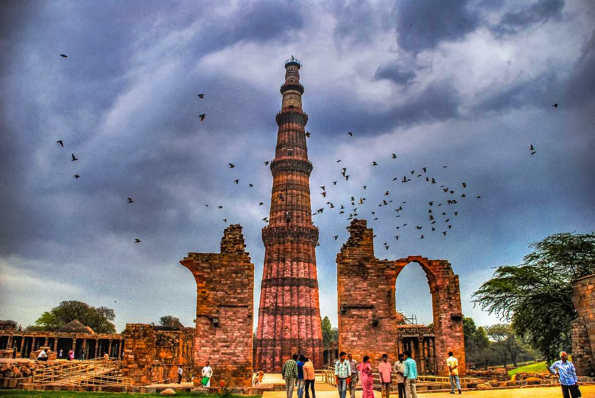

The Qutb Minar, also spelled as Qutub Minar and Qutab Minar, is a minaret and "victory tower" that forms part of the Qutb complex, a UNESCO World Heritage Site in the Mehrauli area of New Delhi, India. The height of Qutb Minar is 72.5 meters, making it the tallest minaret in the world built of bricks. The tower tapers, and has a 14.3 metres (47 feet) base diameter, reducing to 2.7 metres (9 feet) at the top of the peak. It contains a spiral staircase of 379 steps. Its closest comparator is the 62-metre all-brick Minaret of Jam in Afghanistan, of c.1190, a decade or so before the probable start of the Delhi tower.
The Red Fort timings are 7.00 am to 5.00 pm.The best time to visit this monument is during the winter season, when the weather is cool and pleasant for sightseeing.
Qutub Minar ticket price for Indians is Rs 35 and for foreigners it is Rs 550. For SAARC and BIMSTEC nationals, the netry fee is similar to Indian nationals i.e. INR 35. Children upto 15 years of age can enter for free.
| Nearest Metro Station | Qutub Minar Metro Station |
| Nearest Railway Station | New Delhi Railway Station |
| Nearest Bus Stand | Kashmiri Gate Bus Station |
| Nearest Airport | Indira Gandhi International Airport |
| Monsoon | August To September |
| Summer | Starts in early April and peak in May & Temperature is 32°C (avg) |
| Winter | Starts in November and peaks in January & Avg Temperature is 12 to 13°C |
| Recommended Season to Visit | November to March |
#
Standing tall at 73 m, the Qutub Minar is the tallest brick minaret in the world. It is also a UNESCO World Heritage Site.
#
It is considered to be the Tower of Victory, built by Qutubuddin Aibak in the 12th century to mark the end of rule by the last Hindu Kingdom.
#
The Qutub Minar was built in three stages by three rulers of Delhi (Qutab-ud-din Aibak built one storey followed by his successor, Shams-ud-din Iltutmishwho built three storeys more and finally Firoze Shah Tughlak who built the final and fifth storey) and was finally completed in the 14th century, maybe that’s why it tilts a little!
#
There is a mosque called Quwwat-Ul-Islam, built in the same compound as the minaret. Though in ruins, it is noted to be the first mosque built in India.